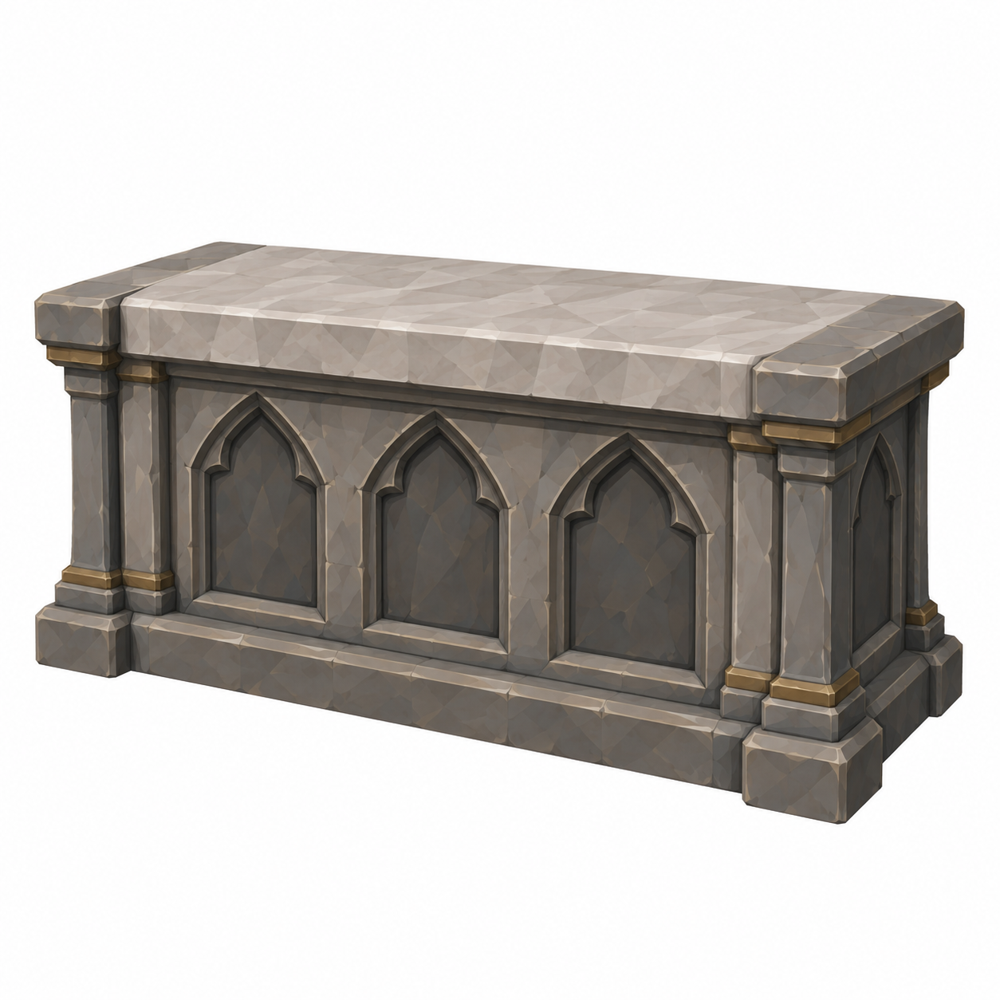
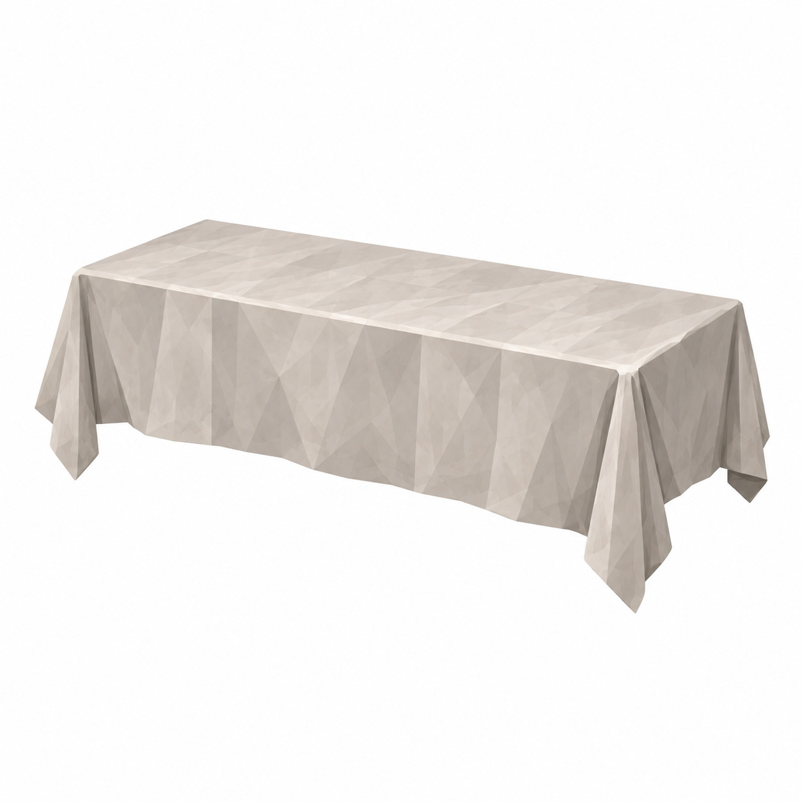
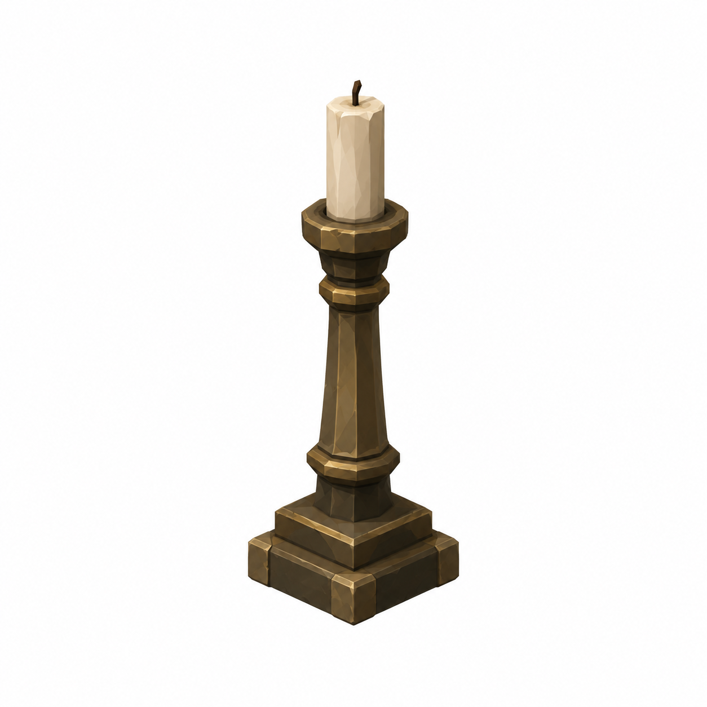
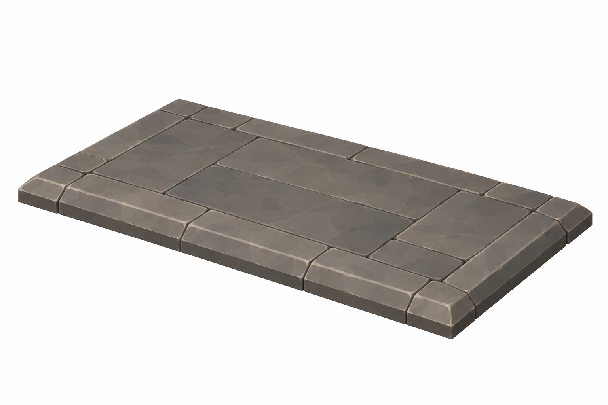

AltarBlock
2.00 ×0.90 ×1.00m

Yeni revizyon taslağı; nihai görsel onayı bekleniyor.
Mustafa yorumlarına göre ölçü ve eksik parça taslakları. Onay durumu: yeni görseller kullanıcı ve Mustafa onayını bekliyor.
İki raw monk kaynak modeli yok; Knight yanında reuse karşılaştırması henüz yapılamadı. Yeni heykel üretilmedi. BRAV-150 dahil ortak heykel mesh'i şartı korunur; Chapel teması kaldırılmadı. Altar doğuda, E4ip batıda.
Tam ölçüler ve kaynak yorumlar · Ölçekli ölçü zarfı paftası
2.00 ×0.90 ×1.00m

Yeni revizyon taslağı; nihai görsel onayı bekleniyor.
top2.10 ×1.00m; frontdrop0.60/sides0.30

Yeni revizyon taslağı; nihai görsel onayı bekleniyor.
baseØ0.18 ×H0.50m

Yeni revizyon taslağı; nihai görsel onayı bekleniyor.
3.00 ×1.80 ×0.15m

Yeni revizyon taslağı; nihai görsel onayı bekleniyor.
45° ayrı referans, beyaz fon, faceted düz boya. Ölçüler brief hedefidir; raster görselden kesin CAD ölçümü çıkarılmaz. Önceki onaylı dil korunur. Tripo/Unity/rig/placement yapılmadı. Runtime okunurluk, sockets ve fit kontrolleri ilgili lane'de.